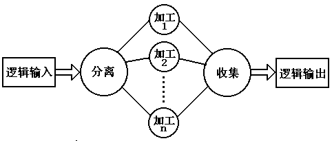

第四章 设计方法
2. 事务分析
事务型结构：
- 事务型结构系统的数据流图：

用事务分析方法设计模块结构图：
- 顶层：为主加工设计一个主模块，功能是整个系统的功能；
- 一层：
- 为逻辑输入中的每一个输入数据流设计一个输入模块，功能是向主模块提供数据；
- 为逻辑输出中的每一个输出数据流设计一个输出模块，功能是为主模块提供输出通道；
- 为每种类型的事务设计一个事务处理模块（变换模块）。
- 二层及以下：与变换分析类似。（图4.43）
几点补充：
- 实际应用中系统通常是两种类型的混合结构，需要以变换分析为主、事务分析为辅进行设计；（图4.44）
- 程序结构与问题结构相对应；
- 在多任务的环境下,将系统中可以并行处理的部分设计成许多任务,彼此间用通讯方式进行联系.
3．实例：银行文件管理系统＿分析与设计
需求分析（SA）：
- 贷款文件由许多纪录组成，每条纪录有14个字段（数据项），数据项的定义见表4.5，贷款文件按第一个字段（帐号）递增排列；
- 修改贷款文件纪录的信息按规定的格式写在卡片上，修改卡片也按帐号递增顺序排列；
- 加工逻辑：系统一次读入设定数目的修改卡片，检查卡片的顺序和上面的修改信息格式是否正确，然后找到文件中需要修改的纪录进行修改，产生新文件和修改纪录。
- 系统的分层数据流图：（图4.45、图4.46、图4.47）
概要设计（SD）：
- 用变换分析技术设计系统模块结构图；（图4.48、图4.49）
- 用事务分析技术进一步对系统局部（编辑卡片）模块进行设计（图4.50）
- 对系统的事务型结构部分的模块图进行改进(消除重复功能)（图4.52、图4.53）